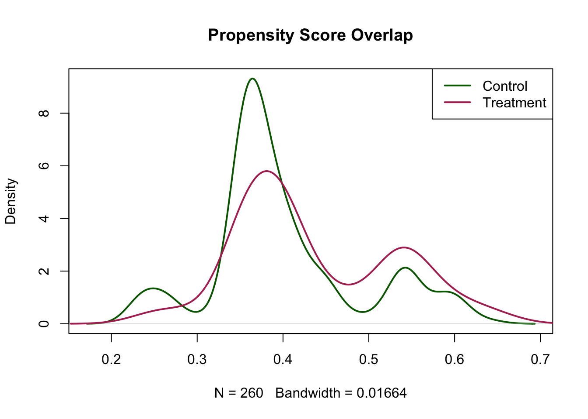
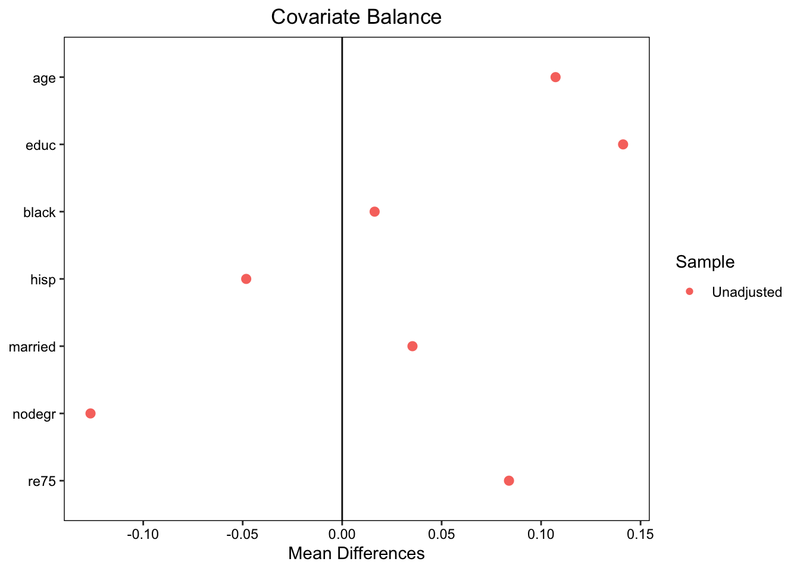
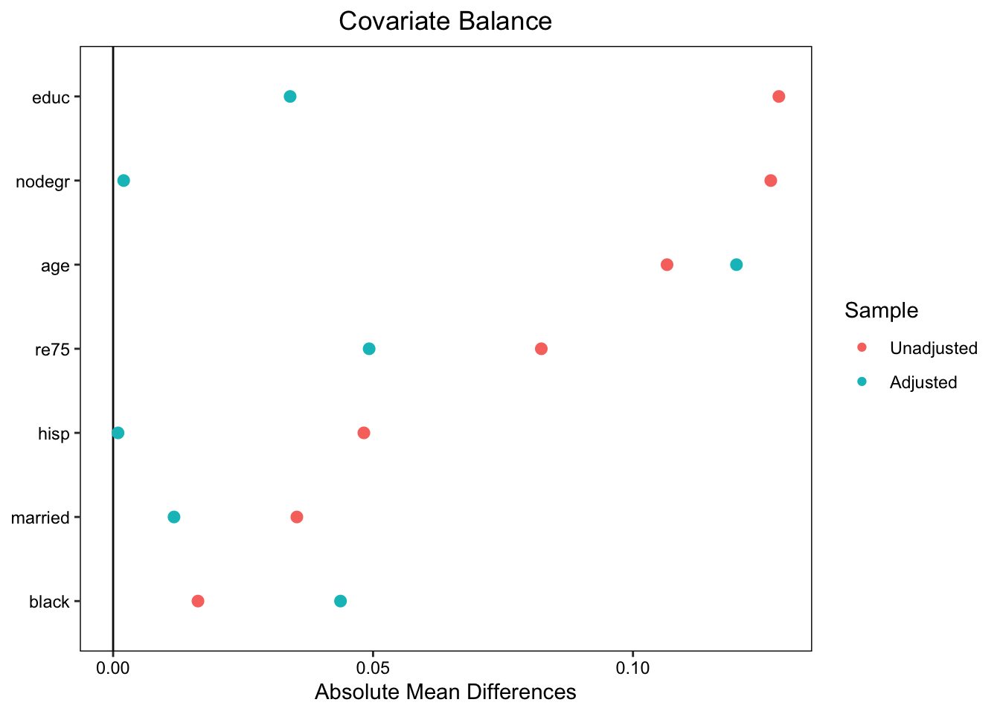
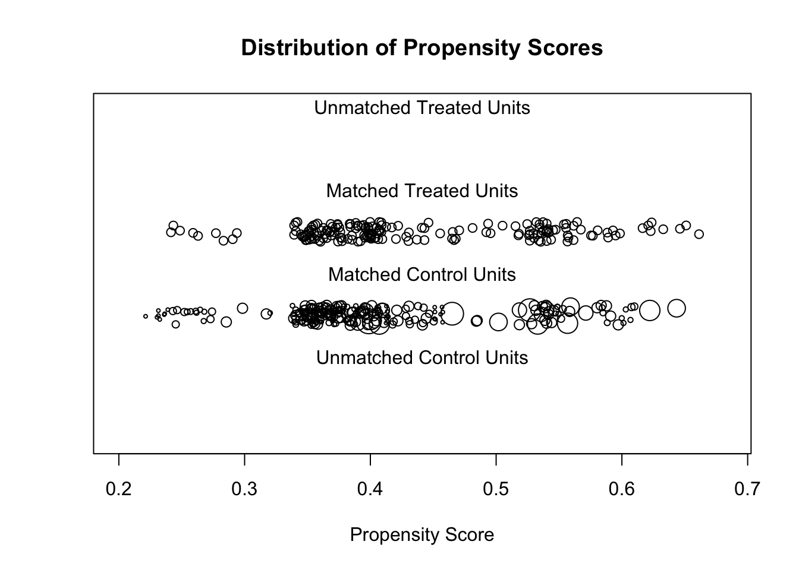

Interpreting the DAG: The causal relationship of interest is between D and Y. (E[Y|do(D=1)]-E[Y|do(D=0)] rather than E[Y|D=1]-E[Y|D=0]).
There are bidirectional correlations caused by an unobserved variable between S1 and X1, and S2 and X1. The unobserved variable might or might not be the same for S1 and X1 and S2 and X1.
S1 and S2 are pre-treatment influences on D. Because they are correlated to X1, there’s a possibility they are confounders. This is connected to unconfoundedness/ignorability/selection on observables: conditioning on the right observable covariates, where we completely observe S, makes treatment assignment ‘ignorable:’ treatment assignment can behave as if random, even if it was not randomly assigned. This is written as “(Y0, Y1) [upsidedown T] D|S”: given conditioning on the right observable S, the outcomes of the treated and untreated are independent of D. Imbens & Rubin write this corresponds to an ‘unconfounded assignment mechanism,’ meaning the probability of being treated does not depend on potential outcomes once we control for S. To have selection on observables in this DAG, we would need to that the only systematic reason some people receive treatment versus control is due to things we observe and can control for, but the correlation between S1&2 and X1 suggests ‘selection on unobservables.’
X1 and X2 are direct causes of Y. X2 is not a potential confounder, but a clean predictor of Y.
Implications for ‘backdoor paths:’ - there is a backdoor path: D is influenced by S1 and S2, which are both correlated with X1 through some unobserved(s), and X1 in turn influences the outcome Y. - neither contains a collider (an endogenous variable with two+ causes pointing into it – but here, D could be a collider since it is influenced by S1 and S2, and would become correlated if D were controlled for), so they suggest non-causal association between D and Y caused by an unobserved confounding (not a collider situation). Dealing with this would require blocking them to identify the causal effect of interest (D on Y).
What problem of causal inference do matching estimators solve?
The fundamental problem of causal inference is the missing counterfactual problem: that, for any given unit, we can only observe one of the potential outcomes: Y1 or Y0. As consequence, we need to impute missing potential outcomes for each unit. Matching is one strategy for imputing these outcomes under assumptions about the assignment mechanism. In this DAG, we know the treatment is not randomly assigned: it depends on S1 and S2, which also influence the potential outcomes (Y0 and Y1). Imbens and Ruben put this as: the assignment mechanism is not unconfounded because the probability of receiving the treatment (D) given X is not equal to the true probability of receiving the treatment, given both observed characteristics and their potential outcomes. This means that even after we control for X, treatment assignment still depends on the potential outcomes themselves, and we can’t reasonably compare the expected value of Y given treatment and the expected value of Y given no treatment – they differ because of the open back door path.
In principle, matching (one of the three classic adjustment strategies, along with stratification and regression adjustment) lets us mimic, after the fact, an ‘experiment’ (maybe not in the full lab experiment sense). It helps achieve balanced confounding variables (or distribution of observed confounders between the treated and untreated) by matching control cases to individual cases.This balance closes back-door paths.
Which variables would I match on this sample? Why?
In this DAG, I would match treated and control cases on X1, or on S1 and S2. The back door paths generating non-causal associations are between (1) S1-X1 and D and S1-X1 and Y, and (2) S2-X1 and D and S2-X1 and Y. With an infinite sample and the assumption that I could observe the right confounders, the ‘unconfoundedness’ assumption would be conditional on the matching, every treated unit would have a comparable control so overlap would be satisfied, and the back door path would be closed, so these matching estimators would identify the causal effect (E[Y(1) - Y(0)]).
However – it’s maybe worth underscoring that matching requires an assumption of unconfoundedness as I can’t guarantee there are no unmeasured confounders, flagging that I could stil unknowingly match on either a collider or a post-treatment variable and thus open a different backdoor path, and there might be an issue with failing to recover causal effects from units without overlap that would be detected but discarded with matching.
Problem 2
Lalonde’s data for national supported work program study. take one of the matching examples we have used in class and extend it by adding pre-treatment real earnings in 1975 (re75) to the set of matching variables (note that 1975 earnings for some individuals might be 0).
Big picture: fundamental problem of causal inference -> don’t observe treatment effect -> to estimate average treatment effect (ATE) or average treatment effect on the treated (ATT) we need to reconstruct the missing counterfactuals for each treated and control person. We can’t just compare the treated versus untreated averages because assignment is not random: in this dataset, people self-select into work programs, and that self-selection can be related to things like education, wealth, and income or pre-treatment earnings.
Thus, adding pre-treatment earnings helps create a predictor of who selects into the treatment, and the outcome (1978 earnings). This improves matching in the example by adding another pre-treatment characteristic, which together help simulate a randomized experiment after the fact, and close back-door paths between treatment and outcome.
f <- treat ~ age + educ + black + hisp + married + nodegr + re75 # added re75 to propensity score list of vars#everything = integer except re75 which is numeric# to cal propensity scoresps_model <-glm(f, data = fresh_data, family =binomial(link ="probit"))fresh_data$ps <-predict(ps_model, type ="response")# look at overlap in propensity score distributions (do treatment/control occupy similar regions of estimated treatment probability)plot(density(fresh_data$ps[fresh_data$treat ==0]), main ="Propensity Score Overlap",xlap ="Prop Score", col ="darkgreen", lwd =2)lines(density(fresh_data$ps[fresh_data$treat ==1]), col ="maroon", lwd =2)legend("topright", c("Control", "Treatment"), col =c("darkgreen", "maroon"), lwd =2)

# common support check before matchingmin_treat <-min(fresh_data$ps[fresh_data$treat ==1])max_treat <-max(fresh_data$ps[fresh_data$treat ==1])min_control <-min(fresh_data$ps[fresh_data$treat ==0])max_control <-max(fresh_data$ps[fresh_data$treat ==1])cat("PS range treatment:", round(min_treat, 3), round(max_treat, 3), "\n")
PS range treatment: 0.241 0.661
cat("PS range control:", round(min_control, 3), round(max_control, 3), "\n")
PS range control: 0.221 0.661
#look at pre matching cov balancesummary(ps_model)
Call:
glm(formula = f, family = binomial(link = "probit"), data = fresh_data)
Coefficients:
Estimate Std. Error z value Pr(>|z|)
(Intercept) 6.507e-01 6.494e-01 1.002 0.31635
age 3.599e-03 8.843e-03 0.407 0.68406
educ -4.094e-02 4.430e-02 -0.924 0.35539
black -1.485e-01 2.269e-01 -0.654 0.51281
hisp -5.094e-01 3.080e-01 -1.654 0.09811 .
married 1.100e-01 1.715e-01 0.641 0.52121
nodegr -5.308e-01 1.924e-01 -2.758 0.00581 **
re75 1.612e-05 1.991e-05 0.810 0.41817
---
Signif. codes: 0 '***' 0.001 '**' 0.01 '*' 0.05 '.' 0.1 ' ' 1
(Dispersion parameter for binomial family taken to be 1)
Null deviance: 604.20 on 444 degrees of freedom
Residual deviance: 588.76 on 437 degrees of freedom
AIC: 604.76
Number of Fisher Scoring iterations: 4
# next, standardized mean differences for each covariancebal.tab(f, data = fresh_data)
Note: `s.d.denom` not specified; assuming "pooled".
Balance Measures
Type Diff.Un
age Contin. 0.1073
educ Contin. 0.1412
black Binary 0.0163
hisp Binary -0.0482
married Binary 0.0353
nodegr Binary -0.1265
re75 Contin. 0.0839
Sample sizes
Control Treated
All 260 185
# next, looking at preM balancelove.plot(f, data = fresh_data)
Note: `s.d.denom` not specified; assuming "pooled".

First, I find good overlap with re75 added to the list of vars in propensity scores: according to the ranges, each treated unit have a comparable control with similar propensity to be treated. The graph makes me a little less confident.
m_full <-matchit(f, data = fresh_data, method ="full", distance ="glm", link ="probit")summary(m_full, un = F)
Call:
matchit(formula = f, data = fresh_data, method = "full", distance = "glm",
link = "probit")
Summary of Balance for Matched Data:
Means Treated Means Control Std. Mean Diff. Var. Ratio eCDF Mean
distance 0.4357 0.4355 0.0013 1.0108 0.0036
age 25.8162 26.6742 -0.1199 0.8467 0.0262
educ 10.3459 10.2775 0.0340 1.0990 0.0099
black 0.8432 0.8870 -0.1203 . 0.0437
hisp 0.0595 0.0585 0.0040 . 0.0009
married 0.1892 0.2009 -0.0299 . 0.0117
nodegr 0.7081 0.7061 0.0045 . 0.0020
re75 1532.0556 1373.5119 0.0492 1.0367 0.0506
eCDF Max Std. Pair Dist.
distance 0.0216 0.0157
age 0.0713 0.8270
educ 0.0168 0.5056
black 0.0437 0.3015
hisp 0.0009 0.0843
married 0.0117 0.5683
nodegr 0.0020 0.1096
re75 0.1120 0.5812
Sample Sizes:
Control Treated
All 260. 185
Matched (ESS) 109.09 185
Matched 260. 185
Unmatched 0. 0
Discarded 0. 0
Warning: Standardized mean differences and raw mean differences are present in
the same plot. Use the `stars` argument to distinguish between them and
appropriately label the x-axis. See `?love.plot` for details.

plot(m_full, type ="jitter", interactive =FALSE)

a. study covariate balance before and after matching
Pre-matching, the clearest, strongest, and most significant predictor is nodegr: people without a degree are 0.53 points less likely to enter the treatment. Otherwise, the main variable with a significant effect is his: hispanic participants are somewhat less likely to be treated. From goodness of fit, I note that covariates reduce unexplained changes somewhat, and the AIC = 604.8 suggests modest predictive power. The balance table test suggests that the treated and control groups are reasonably comperable on most (not all) covariates.
I learn from the summary of the full matched model that there’s great post-matching balance: the difference in means between the treated and untreated by collective standard deviation is 0.1; the ratio of treated/control variances is close to 1; the distance between the treated and control eCDFs is small; and the standardized mean differences are less than 0.12
b. does the number of matched cases change?
Technically, no (this is full matching). All observations were matched (looking at the sample sizes report, All for control = all for control matched, and all for treated = all for treated matched, 0 unmatched and 0 discarded).
However, because of weighting, enough control units were shrunk such that the control group effectively dropped. This is good: it means the influence of weaker matches was diminished, and the influence of stronger matches boosted.
t test of coefficients:
Estimate Std. Error t value Pr(>|t|)
(Intercept) 4229.09 483.97 8.7384 < 2.2e-16 ***
treat 2120.05 692.69 3.0606 0.002343 **
---
Signif. codes: 0 '***' 0.001 '**' 0.01 '*' 0.05 '.' 0.1 ' ' 1
#include covariates to adjust for residual imbalancem_full_ols_cov <-lm(re78 ~ treat + age +educ + black + hisp +married + nodegr + re75, data = m_full_data, weights = weights)coeftest(m_full_ols_cov, vcov.=vcovCL, cluster =~subclass)
t test of coefficients:
Estimate Std. Error t value Pr(>|t|)
(Intercept) -987.84671 3432.70581 -0.2878 0.773656
treat 2048.93590 704.08888 2.9101 0.003799 **
age 66.87848 44.97232 1.4871 0.137710
educ 446.26505 200.79397 2.2225 0.026762 *
black -1348.96943 1183.22137 -1.1401 0.254878
hisp 922.82779 1618.93427 0.5700 0.568957
married -577.46697 1021.91673 -0.5651 0.572308
nodegr -241.33685 1232.12218 -0.1959 0.844802
re75 0.20055 0.11957 1.6772 0.094214 .
---
Signif. codes: 0 '***' 0.001 '**' 0.01 '*' 0.05 '.' 0.1 ' ' 1
c. compare resulting att estimate and explain source of difference.
After adjusting for covariates, the ATT moves from 2120.05 (SE of 692.69, p = 0.002) to 2048.93 (SE = 704.08, p = 0.0037).
So, adjusting for covariates reduces the point estimated effect of being treated (job training) on expected earnings in 1978 by about $930. This difference reflects minor residual confounding of variables influencing both the likelihood of treatment and the outcome: matching already reduced those differences in the distribution of covariates and achieved strong balance between treatment and control groups, so adding covariates only slightly changed the ATT, thus confirming that confounding had already been largely dealt with.
In terms of comparing with pre-matching differences, the treatment groups consistently had lower earnings before treatment and less education before treatment, so the raw difference in the outcome (earnings in 1978) was biased downward. After matching with pre 1975 earnings, this back-door-path got blocked (although it is possible that other factors would still influence treatment).
After balancing, the ATT rises by $2k and is statistically significant: a “real” effect effectively emerges from identifying and reducing confounding, revealing a significant, substantial, and plausibly positive effect of the program at hand – an effect that was previously obscured.